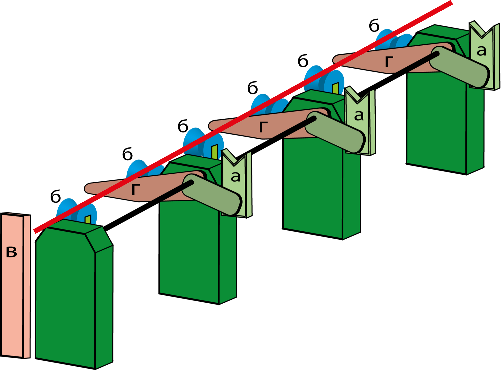
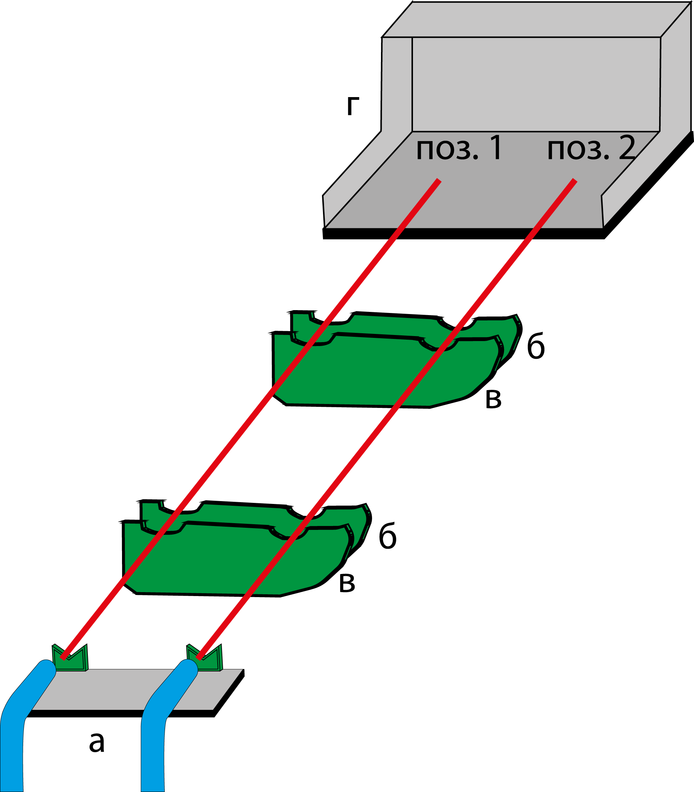
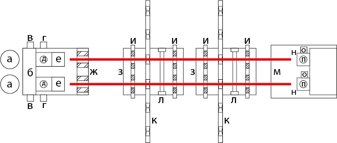
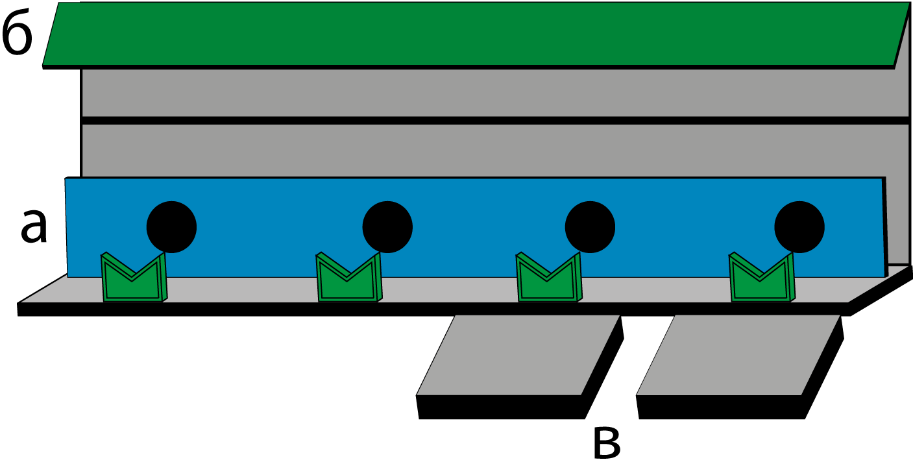

Гидропресс «Bracker» состоит из 4 основных станций: станция измерения, станция промывки, станция испытания, станция продувки. Перед гидропрессом находится накопительный транспортер, за гидропрессом — сортировочный карман. Все станции, кроме станции измерения, имеют 2 контрольных места.
Станция измерения показана на рисунке 1. Состоит из следующих узлов: а) однотрубный передатчик, б) ориентировочные ролики, в) ограничитель хода, г) рычаги передачи труб. Принцип работы: однотрубный передатчик снимает трубу с накопительного транспортера и укладывает ее на ориентировочные ролики; ролики откатывают трубу назад, затем вперед, при этом труба упирается в ограничитель хода и происходит измерение длины трубы датчиками, установленными вдоль роликов; рычаги передачи труб перекатывают трубу на станцию промывки. Здесь и далее на рисунках красной линией показано положение трубы.
Важно: скорость отката трубы составляет порядка 0.5–0.7 м/с и с учетом массы трубы на ограничитель хода прилагается большое усилие, поэтому необходимо соблюдать технику безопасности.

Рисунок 1 - Станция измерения
Станция промывки показана на рисунке 2. Состоит из следующих узлов: а) подача воды, б) вставной рычаг № 1, в) вставной рычаг № 2, г) приемное корыто. Принцип работы: рычаги передачи труб перекатывают трубу с ориентировочных роликов на поднятые вставные рычаги в позицию 2; вставной рычаг № 1 опускается, затем поднимается, при этом, за счет конструкции рычагов, труба перекатывается в позицию 1; повторяется передача трубы с ориентировочных роликов; опускается вставной рычаг № 1, потом вставной рычаг № 2 и трубы укладываются на контрольные места; подача воды начинает промывку труб от остатков уплотнительной смазки, металлической стружки и посторонних предметов.
Важно: промывка труб проводится водно-воздушной смесью, подаваемой под давлением 0.4 МПа, поэтому необходимо соблюдать технику безопасности.

Рисунок 2 - Станция промывки
Станция испытаний показана на рисунке 3. Состоит из следующих узлов: а) мультипликатор, б) передняя неподвижная опора, в) прямой клапан, г) клапан высокого давления, д) клапан наполнения, е) передняя зажимная головка, ж) муфтовый зажим, з) передаточная тележка, и) контрцанговый зажим, к) поперечный транспорт, л) юстировочная планка, м) задняя подвижная опора, н) задняя зажимная головка, о) клапан сброса, п) воздушный клапан. Принцип работы: поперечный транспорт снимает трубы со вставных рычагов станции промывки и укладывает их на контрольные места; муфтовый зажим фиксирует трубы для правильного подвода передних зажимных головок; подходят передние зажимные головки; подходят задние зажимные головки; контрцанговый зажим фиксирует трубы, предотвращая их изгиб; проводится цикл испытания; после испытания отходят зажимные головки и освобождаются контрцанговый и муфтовый зажимы.
Важно: испытания проводятся под большим давлением (min = 405 бар), поэтому необходимо соблюдать технику безопасности.

Рисунок 3 - Станция испытаний
Станция продувки показана на рисунке 4. Состоит из следующих узлов: а) продувочная планка, б) прижим, в) погружные места. Продувка осуществляется в два этапа: предварительная и окончательная продувки. Принцип работы: поперечный транспорт снимает трубы с контрольных мест станции испытаний и укладывает трубы на сначала предварительную продувку, происходит продувка труб, затем на окончательную продувку, где также производится продувка; погружные места опускаются, трубы выкатываются из гидропресса и готовы к установке предохранительных деталей. Если трубы признаны негодными, то перед опусканием погружных мест открывается сортировочный карман и негодные трубы сбрасываются в брак.
Важно: продувка проводится воздухом, подаваемым под давлением 0.4 МПа, поэтому необходимо соблюдать технику безопасности.

Рисунок 4 - Станция продувки
В работе гидропресса также используется гидравлическое оборудование. Помимо мультипликаторов к гидравлическому оборудованию можно отнести следующие элементы: насосы масляные (станция механизации), водяные (насосы низкого давления), насосы высокого давления, сосуды (баки) высокого и низкого давления, азотная станция, аккумулятор, цилиндры.
Порядок гидроиспытаний можно рассмотреть с двух сторон: со стороны автоматики и со стороны гидравлики.
Рассмотрим порядок гидроиспытания на гидропрессе "Bracker" со стороны технической автоматики. Сигнал готовности проведения испытания формируется, если заряжен аккумулятор (есть сигнал с реле верхнего положения поршня аккумулятора), датчики давления в трубе (85BP122 для позиции №1, 85BP124 для позиции №2) работоспособны и мультипликатор заряжен (вычисляется по сигналу с датчиков перемещения плунжера мультипликатора 86BS136 для позиции №1, 86BS138 для позиции №2).
Если есть сигнал разрешения на проведение испытания, то на 8-м шаге автоматики проверочной станции подается сигнал на включение реле дискретного клапана управления мультипликатором на нагнетание (90YA1 для позиции №1б 90YA2 для позиции №2), давление в цилиндре мультипликатора устанавливается управляемым редукционным клапаном (87LA200 для позиции №1, 87LA202 для позиции №2). Для формирования сигнала задания на редукционный клапан мультипликатора используется программный ПИ-регулятор, при помощи которого давление в испытываемой трубе устанавливается равным испытательному давлению, заданному с панели оператора.
Параллельно с увеличением давления в трубе для компенсации усилия, оказываемого трубой на подвижную опору, подается сигнал на включение реле дискретного клапана управления опорой на нагнетание (90YA5 для позиции №1, 90YA7 для позиции №2), также формируется сигнал задания на редукционный клапан подвижной опоры (87LA204 для позиции №1, 87LA206 для позиции №2), который устанавливает компенсационное давление в цилиндре подвижной опоры в соответствии с коэффициентом компенсации, заданным программно.
Время испытания, диаметр трубы и испытательное давление задаются с панели оператора. После окончания времени испытания подается сигнал на включение реле дискретного клапана управления мультипликатором на зарядку (90YA2 для позиции №1, 90YA4 для позиции №2), испытательное давление в трубе начинает падать. Как только давление в трубе снизится до определенной величины, включатся реле дискретного клапана управления подвижной опорой на слив (90YA6 для позиции №1, 90YA8 для позиции №2) и давление в трубе упадет до нуля. Работу всех реле и датчиков, указанных здесь можно видеть на экранах панели оператора.
Теперь рассмотрим порядок испытания со стороны гидравлики. Насосами низкого давления вода подается в мультипликатор через прямой клапан — происходит зарядка мультипликатора. Как только зарядка мультипликатора окончена, прямой клапан переключается в положение наполнения. Когда автоматика дает сигнал разрешения на цикл наполнения, открывается клапан наполнения и вода, через прямой клапан и клапан наполнения, заполняет тело трубы, при этом из трубы воздух вытесняется через воздушный клапан.
При включении сигнала разрешения испытания начинается цикл испытания, при этом клапан наполнения и прямой клапан перекрываются, открывается клапан высокого давления, включается насос высокого давления, плунжер мультипликатора движется вниз и подает воду через клапан высокого давления в трубу под давлением, которое проходя через пропорциональный клапан становится равным испытательному давлению, заданному через панель оператора.
После окончания цикла испытания, когда давление в трубе падает до нуля, плунжер мультипликатора движется вверх, происходит зарядка мультипликатора, а вода из трубы сливается через клапан слива.